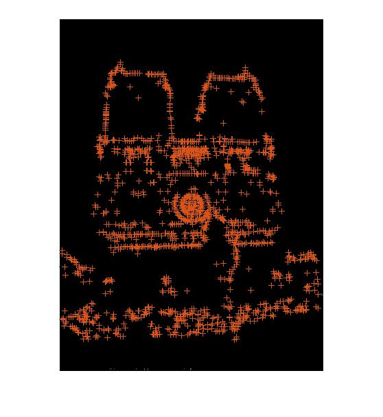
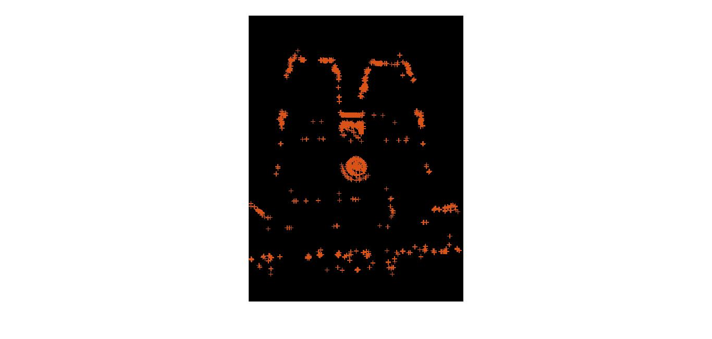
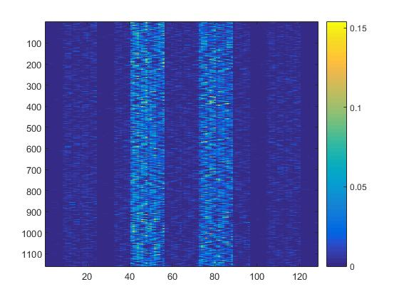
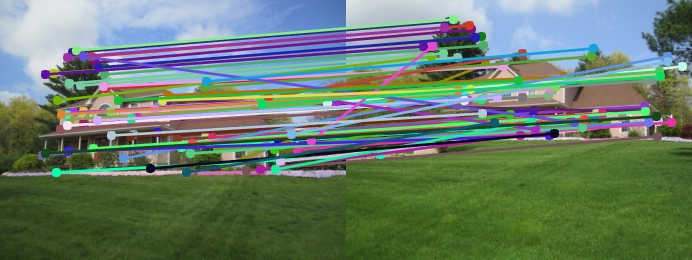
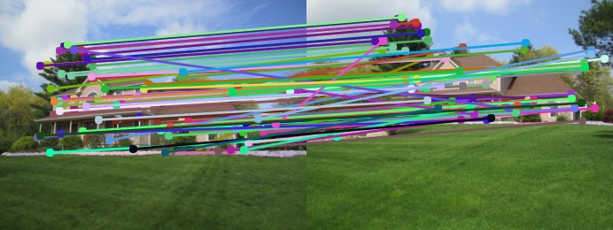

CS 4495 / 6476 Project 2: Local Feature Matching
This report shows the steps involved in matching local features in images of an object taken from possibly different view points, distances, etc. It talks about - 1) Finding those points in images which are distinctive in all directions around them, so that they can act as promising matching points between images. 2) Finding the gradients of intesity change around points found in step 1 using a well-established technique SIFT (Scale Invariant Feature Transformation) and 3) Matching the features in the two images given using Nearesr Neighbor Distance Ratio.
Finding Interest Points in an image
Harris Corner Detection
Harris Corner Detector has been used for finding interest points (corners classify as the best points because the intensity around them changes in all directions as opposed to a flat region or an edge). However some points which have very less value of harris corner value might not be strong enough corners. Therefore such points have been suppressed by using a threshold value of 0.005 times the maximum value of the harris corner value for all the pixels in the image. Also, the points near edges do not really qualify as interest points although sometimes they have a high harris corner value. Hence all the points within a distance of half the feature width from all edges have been supressed.
Additionally, some interest points might be clustered together around certain areas with erratic intensity changes. We ultimately choose only a few points (100 in our case) in the order of matching strength (strongest first) with each other (in feature matching step). This might lead to a matching between points only in that cluster, not giving the whole picture as far as corner points in both images are concerned. Hence points which are local maxima are chosen and the rest are suppressed. The following two methods can be used for performing this "Non-maxima suppression".
Colfilt method
Matlab provides a method called "colfilt" which basically slides over a matrix and applies a function (supplied as a parameter) to all the points within that sliding window. This can be used to our advantage here for finding the max values in a block of harris corner values (3*3 window has been used). These will leave the points which are local maxima's in a 3*3 neighborhood around them.
Adaptive Non-Maxima Suppression (ANMS)
ANMS can be used instead of Colfilt to get points which are uniformly spread out across the image's space. This method instead of fixing a window size for finding local maxima, changes it based on the harris corner value distribution across interest points. It works by finding a radius (defined as the least distance from points which have a greater harris corner value) for each of these points. All points within this radius are, therefore, less than its value. However, only those points are retained which have a harris corner value of at least 10% greater than each of the points present within its radius. Algorithmically speaking, the points are first arranged in the order of descending harris corner values. Radius for each of the points is calculated by comparing its distance to points which are greater than itself and finding the minimum of those. The next step is to test if all the points with lesser corner value are within this radius are infact less by 10%.
Comparison of different non-maxima suppression methods
The following images show the interest points detected by using the Colfilt (left) and ANMS (right). As can be seen from below, ANMS gives uniformly distributed interest points. However, feature matching results have shown that its accuracy is not better than Colfilt points. That is to say ANMS is not better than Colfilt in generating those points which can ultimately be matched accurately between images.
 Building Feature Descriptors for Interest Points
For any two points on two different images to match, we need to know what is around in the immediate vicinity of that point. To be precise, we need to know how the intensity changes (gradient) in different directions around that point. The following is one of very well-established methods in Computer Vision which can be used to generate these feature descriptors.
Scale Invariant Feature Transformation implementation
In this method, the image is filtered by gaussian in eight directions (corresponding to degrees 0, 45, 90, 135, 180, 225, 270, 315). The image is then patched into 4*4 cells. Each of the cells in all 8 images contribute to a non-negative gradient in that particular direction. This is calculated for all the 16 cells and this results in a 128 (8*16) feature vector for each of the interest points. The gradient values in a particular cell of all the filtered images in different directions are grouped together as an 8-bin.
The result of feature descriptor on Mount Rushmore image can be visualized in the following figure. The idea is that aggregate gradient must exist in all directions at the interest points. As can be seen, the X-axis shows the 128-feature vector. The Y-axis shows the gradient fluctuation across the image. Notice that it has patches of 8 bins (one for each 4*4 cell). Although some bins seem to have a zero gradient (dark blue color), upon closer observation it can be seen that they do have fluctuations between lighter shades, hence have a gradient.
Matching Interest Points between Two Images
Nearest Neighbor Distance Ratio (NNDR) has been used to find the closest matches between the features of interest points in the images. It is the ratio of first and second nearest features in second image for every feature in the first image. A threshold of 0.8 has been imposed on NNDR. In order to select the top 100 matches, the matches are ordered in the descending order of confidence (less NNDR implies more confidence).
Results of Feature Matching
The following section shows the feature matching results on various pairs of images. The alpha and threshold parameters in Harris Corner Detector, scale factor of images, etc are experimented with and tuned for each of the pairs.


 


Some interesting observations
1) Increasing the alpha parameter in Harris Corner calculation from 0.04 to 0.06 resulted in an increase in accuracy from 77% to 91% for the Mount Rushmore image.
2) In Episcopal Gaudi, one of the images looks brighter than the other. This is essentially because of differences in intensity / amount of blur. Even though SIFT is considered to be robut to blur, the results have not been particularly great on this image. Techniques like PCA-SIFT work better for feature detection in images like this one. With SIFT, the accuracy improved from 3% to 6% by the increase in alpha parameter of Harris corner value from 0.04 to 0.06.
3) The percentage of maximum harris corner value which is used in calculating the threshold for interest points suppression has been found to be optimal at 0.005. Any value less than or greater than this resulted in a lesser accuracy.